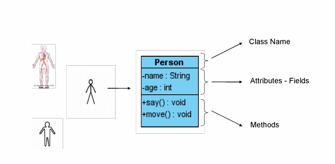

Lập trình thử tục (Procedural Programming)
- là một mô hình lập trình ra đời rất sớm, dựa trên mô hình lập trình hướng cấu trúc (Structured Programming)
- Các ngôn ngữ thủ tục thường là các ngôn ngữ bậc cao ra đời từ rất sớm
- Đặc trưng bởi các thủ tục, bao gồm các tập lệnh tuyến tính nối tiếp nhau
- Tập trung vào cấu trúc (structure) của chương trình
- Ví dụ: C, COBOL, Fortran, LISP, Peri, VBScript
Lập trình hướng đối tượng (Object Oriented Programming)
- Không tập trung vào cấu trúc như ngôn ngữ thủ tục, mà tập trung vào mô hình hóa dữ liệu (data modeling)
- Lập trình viên sử dụng các lớp (class) khi lập trình
- Mô phỏng các đối tượng trong thế giới thực vào trong các chương trình
- Ví dụ: C++, C#, Java, PHP, Javascript,...
- OOP là một triết lý xây dựng chương trình
- Tất cả mọi thứ trong OOP đều là đối tượng. Một chương trình phần mềm được coi như là một thế giới bao gồm các
đối tượng tương tác với nhau
- Mã lệnh và dữ liệu được kết hợp trong một thể thống nhất- đó là đối tượng
- Đối tượng bao gồm:
- Thuộc tính: các dữ liệu, tính chất của đối tượng
- Hành vi: các khả năng, hành động mà đối tượng có thể thực hiện
- Các đối tượng có thể có quan hệ với nhau
So sánh lập trình thủ tục và hương đối tượng
- Lập trình hướng cấu trúc:
- Hướng tiếp cận: từ trên xuống (top down)
- Chia nhỏ bài toán thành các module chức năng
- Dữ liệu và mã lệnh phân tán
- Hạn chế:
- Tính ổn định giảm khi hệ thống phát triển
- Khó bảo trì và tái sử dụng
- Chi phí phát triển cao
- Lập trình hướng đối tượng:
- Hướng tiếp cận đa dạng gần với thực tế
- Tìm và phân tích mối quan hệ giữa các đối tượng và các bài toán
- Mã lệnh và dữ liệu liên kết trong thể thống nhất
- Ưu thế:
- Khả năng tái sử dụng cao
- Ổn định và dễ bảo trì
- Chi phí giảm dần
Đối tượng
Mỗi đối tượng có những thuộc tính hay những đặc điểm mô tả và những hành vi riêng biệt nhằm phân biệt nó với các đối tượng khác.
Thuộc tính và hành vi
- Thuộc tính là những đặc điểm đặc trưng của đối tượng, thể hiện thông qua những giá trị cụ thể
- Hành vi là những cách thức mà qua đó đối tượng thể hiện sự hoạt động hay chức năng của chúng
Lớp
- Lớp là khớp niệm dùng để mô tả một loại đối tượng có những thuộc tính, hành vi và những mối quan
hệ thông thường tương tự nhau
- Thuật ngữ lớp có thể hiểu là cách nói viết tắt của cụm từ "lớp các đối tượng".
- Như vậy mỗi đối tượng được coi như là một thể hiện của lớp với những giá trị thuộc tính cũng như cách thức hoạt
động đặc trưng.
;
Khai báo đối tượng
- Cú pháp:
let objectName = {};
hoặc
let objectName = { property1: value1, property2: value2,...};
- Ví dụ:
let person = {
firstName: "John",
lastName: "Doe",
age: 50,
eyeColor: "blue
};
Định nghĩa lớp
- Tạo lớp mới với thuộc tính và phương thức:
function person(firstName, lastName, age, eyeColor) {
this.firstName = firstName;
this.lastName = lastName;
this.age = age;
this.eyeColor = eyeColor;
this.changeName = function (name) {
this.lastName = name;
}
};
- Tạo đối tượng:
let myClassmate1 = new person('Dinh','De',20,'brown');
let myClassmate2 = new person('Phung','Lam',25,'brown');
Sử dụng thuộc tính
- Truy xuất giá trị của thuộc tính của đối tượng
objectName.property // person.age // myClassmate2.age
- Sử dụng câu lệnh for-in để truy xuất đến tất cả các thuộc tính của đối tượng
objectName["property"] // person['age'];
let person = {fname:"John", lname:"Doe", age:25};
for (x in person) {
txt += person[x];
}
Sử dụng phương thức